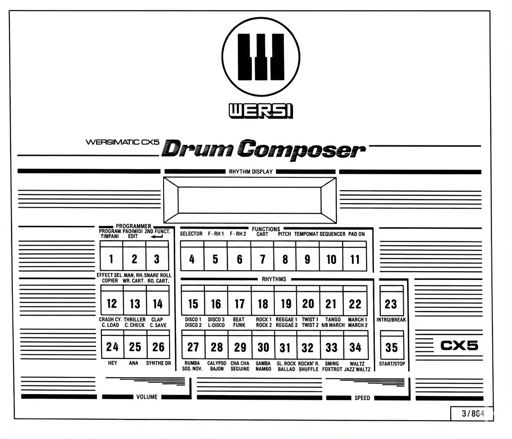

This user manual is designed to help you learn about the many capabilities and applications of the WERSI Drum Composer CX 5. The many inscriptions on the control panel may initially confuse you, but don't worry: we will explain all the functions of your CX 5 in detail.
The first part of the manual covers the functions and possibilities of the basic configuration, while the second part introduces the additional capabilities and applications of the full configuration. Even if you purchased the CX 5 in the full configuration, you should first familiarize yourself with the basic version!
As you know, the capabilities of a computer system are determined by its software; this also applies to the CX 5. Please note that software changes may result in deviations from the functions described here. Now enjoy your WERSI Drum Composer CX 5!
CAPABILITIES OF THE DRUM COMPOSER WERSIMATIC CX 5
The following list includes the highest configuration level:
Each of the 128 rhythms can be copied to any storage location in RAM or to the Cartridge, allowing you to create different Cartridges with various rhythms.
Instruments and Sounds
26 digitally stored instruments and 1 analog instrument (Synthedrum) = 27 instruments:
Bass drum, Disco
Bass drum, Soft
Snare drum, Soft
Snare drum, Disco
Hihat sticked
Hihat open
Conga high
Conga low
Tom Tom high
Tom Tom low
Cymbal Ride
Cymbal Soft
Crash Cymbal
Rimshot
Handclap
Triller
Woodblock
Bass drum, Rock
Cowbell high
Cowbell low
Maracas
Brush
Tambourine
Hey
Aha
Timpani
Synthedrum (analog)
Key Features
16 of the 27 instruments can be triggered manually (Manual Rhythm)
Sequencer (up to 16 sequences possible: 432 bars total)
Tempomat for fixed tempo settings
Pitch control for overall tuning of digital instruments
16-character alphanumeric display for speed display, rhythm names, and operator guidance
Programmable rhythm names for custom rhythms
Timpani playable over one octave from the control panel
Up to 8 Pads connectable via connection device
Pad presets - up to 8 different presets can be saved
Pads playable during running rhythm
Cassette interface
8-channel studio output
M.I.D.I. interface
Sync to Tape
Cartridge support
PREPARATIONS
Before you can get started, you must make the necessary connections and observe the following important safety measures.
1. Power Connection
Check mains voltage: The specification on the voltage selector next to the mains input must match your household mains voltage!
Establish mains connection: Insert the power cable into a properly installed Schuko socket.
Note: The power transformer is short-circuit protected by a thermal fuse and therefore requires no primary mains fuse.
Observe VDE regulations! Always unplug the power cable before opening the device!
If you transport your CX 5 to different locations, follow this tip:
Note for cold weather: Devices coming from cold environments fog up in warm rooms. This condensation is a normal physical process. Please wait for the device to dry before switching it on, as leakage currents could cause damage. First acclimatize, then play!
2. Audio Connection
The CX 5 has 2 audio connection options:
Stereo Output: Via the stereo jack socket "Stereo-Output," a two-channel sum signal can be taken out. Connect your amplifier or active speaker here, or a high-impedance stereo headphone (greater than 800 ohms).
8-Channel Output: For use with a mixing console, 8 separate channels are available via RCA connectors.
The 27 instruments of the CX 5 are distributed across the 8 channels:
Channel
Instruments
Chan. 1
Bass Drums
Chan. 2
Snares
Chan. 3
Hi-Hats
Chan. 4
Tom-Toms, Timpani
Chan. 5
Cymbals
Chan. 6
Bongos, Synthedrum
Chan. 7
Tambourine, Brush, Thriller, Clap, "Hey," "Aha"
Chan. 8
Cowbell, Crash Cymbal
BASIC CONFIGURATION
Switching On
Switch on the device using the power switch located on the back of the device. The LEDs in the control panel buttons blink as a "start check." The display shows: "DRUMCOMPOSER CX 5" (The basic version has no display).
Note: Control panel buttons are numbered from top left = 1 to bottom right = 35.

Selecting and Starting a Rhythm
Press any rhythm selection button 15-22 or 27-34. The start check is interrupted. Only the LEDs of the activated rhythm selection button and button 6 "F - RH 1" (= Fixed Rhythm Group 1) light up; the LED of the "START/STOP" button (35) blinks.
The display shows the rhythm name. Start the rhythm by pressing the "START/STOP" button (35). The symbol "▶" lights up on the right side of the display. The display shows the speed on the left in beats per minute (20-233 bpm).
The speed can be changed with the "Speed" slider. Use the "Volume" slider to set the desired volume. The "START/STOP" button blinks at the beginning of each measure (Down-Beat Indicator).
Changing Rhythms
To change the rhythm, simply press one of the buttons 15-22 or 27-34. The new rhythm name appears in the display.
Selector
The "Selector" button (Button 4) selects the rhythm group whose rhythms are assigned to the lower inscriptions of the rhythm selection buttons. You can access 32 rhythms of permanently installed Group 1 "F-RH 1" or 32 rhythms of Group 2 "F-RH 2" (Button 6).
The Selector allows you to choose between 2 rhythms per rhythm selection button, offering variations of the printed rhythms.
Reset Function
Pressing the red reset switch on the back causes the CX 5 to end its current function and return to the initial state. Use this if you make an operating error.
Tempomat
The CX 5 offers a standard tempo (ideal tempo) for each rhythm. Press "Tempomat" (Button 9) to activate it (LED lights up). Each rhythm will be played at a fixed tempo, and the "Speed" slider becomes non-functional.
Press "Tempomat" again (LED goes out) to adjust tempo with the "Speed" slider. For custom rhythms, you can set your ideal tempo as desired.
Start/Stop/Intro/Break
Each programmed rhythm consists of two differently composed measures that repeat alternately. The "Down-Beat Indicator" signals the first beat of each measure.
"Start/Stop" always starts on the "one" of the first measure. Each programmed rhythm includes an Intro (introduction) and a Break (solo). Tap the "Intro/Break" button (23) briefly to trigger the intro, then the normal rhythm follows.
During running rhythm:
Brief tap (less than 0.1 sec.): Solo at the next measure start
Long press: Solo immediately
Pitch
For all rhythms, you can change the programmed tuning:
Start the desired rhythm
Activate "Pitch" button (8) (LED lights up)
Use the "Speed" slider for tuning adjustment
Press "Pitch" again (LED goes out)
The new tuning applies to all selected rhythms. Press the slider to the middle position to restore normal tuning. The CX 5 automatically switches to normal tuning when powered off.
Snare Roll
The "Snare Roll" function (Button 14) allows you to trigger a drum roll during a running rhythm.
Sound Effects
The CX 5 in full configuration offers 6 sound effects:
Group 1:
Crash Cymbal
Thriller
Clap
Group 2:
Hey
Aha
Synthe Drum
Switch between groups with the "Effect Sel." button (12).
Manual Rhythm
The CX 5 allows you to trigger 16 instruments directly by hand (Manual Rhythm):
Press "Man. Rh." (Button 13) (LED lights up). The rhythm selection buttons 15-22, 27-34 now function as instrument selection buttons.
Press "Man. Rh." again (LED goes out) to switch off Manual Rhythm. You can also start the previously selected rhythm directly with "START/STOP" without switching off "Man. Rh."
FULL CONFIGURATION
1. Timpani Mode
The CX 5 allows you to play 13 kettledrums tuned in half-tone steps:
Press "2nd Function" (Button 3) (LED blinks)
Press "Timpani" (Button 1)
The display shows "Timpani Mode on"
Play kettledrums using buttons 15-31
Press "2nd Function" again to exit
2. Programming Rhythms
You can program up to 32 custom rhythms into free storage locations and modify them as needed. First, place the included control panel mask on the device.
2.1 Selecting Storage Location
Press any button 15-22 or 27-34 (16 locations). Using "Selector" gives you a second location per button (total of 32).
5/4 time: Press Button 19 (5 beats) then Button 17 (3 steps for triplet feel)
The display shows the time signature. Press "Pgm/Lev" (Button 14) (LED on) to activate Program mode. Start the CX 5 to hear a metronome at the set time signature.
2.3 Playing in Instruments
Instruments are divided into three groups:
Group 1: Activate "I. Gr. 1" (LED on)
Group 2: Activate "I. Gr. 2" (LED on)
Group 3: Both off
Select the instrument group and play the rhythm with the instrument selection buttons. The display counts measures, beats, and steps.
To delete incorrectly placed instruments, press "Erase" then the instrument button. When done, delete the metronome by pressing "Erase" and "Rimshot".
2.4 Programming Volume
After placing instruments, you can program individual volume levels:
Press "Pgm/Lev" (14) to turn it off; display shows "LEVELS". Press "I. Gr. 1" to adjust Group 1 volumes (7 levels). "I. Gr. 2" adjusts Group 2. Press "Program" (1) to exit.
2.5 Entering Intro/Break
Call up the rhythm
Press "Program" twice
Press "Pgm/Lev" (14) and "Intro/Break" (LED on)
Press "START/STOP"—program runs
First measure for Intro, second for Break
Press "Program" again to save
2.6 Programming Standard Tempo
Call up the rhythm
Start the rhythm
Set tempo with "Speed" slider
Press "Program" once
The tempo is saved and accessible via the "Tempomat" button.
2.7 Pitch
See Basic Configuration, "Pitch" section.
2.8 Editing Rhythm Names
Select the rhythm
Press "2nd Function" (3) (LED blinks)
Press "Edit" (Button 2)
Use buttons as a typewriter (1-22: alphabet, 28-33: numbers)
Give your rhythm a 6-character name
Press Button 35 (START/STOP) to save
3. Programming Sequences
Create up to 16 sequences from custom rhythms (max 432 measures):
Select storage location
Press "Sequencer" (LED on)
Press "Program" twice—display shows "Bar 0"
Call up first rhythm and start it
Press "Sequencer" for each measure length (1×=1 measure, 2×=2 measures, etc.)
Select rhythms sequentially and press "Sequencer" for each
To incorporate Breaks, additionally activate "Break" button. For pauses, select "STOP" and press "Sequencer".
Ending sequence recording:
Press "Program" while running: Endless loop
Press "STOP" then "Program": Play once
Selecting sequences:
Activate storage location
Press "Sequencer"
Press "START"
4. Rhythms in the Cartridge
Insert the RAM Cartridge into the cartridge slot on the back to save and retrieve rhythms.
4.1 Write Cartridge (Wr. Cart.)
Save all custom rhythms, intros, breaks, tempomat settings, sequences, and pad presets:
Drum Pads are electronic alternatives to traditional percussion—compact, lightweight, and versatile.
6.1 Accessories Needed
CX 5 in full configuration
Pad Connection Kit (interface for up to 8 pads)
One bass pad and up to 7 universal pads
Connection cables (mono jack-to-jack)
Stands for pads and foot machine for bass pad
Connecting: Switch off CX 5 first! Connect Pad Connection Kit to the Pad Interface on back, then connect pads with cables.
6.2 Activating Pad Mode
Switch on CX 5
Activate any button 15-22 or 27-34
Activate "Pad on" (11)—LED lights up
The display shows "P" on the right with "1" indicating Pad Preset 1. LEDs in buttons 27-34 act as a VU meter showing strike volume.
Note: After first activation, pads have random tuning. Program proper tuning using section 6.8.
6.3 Pads During Running Rhythm
Select Pad Preset 1
Choose a rhythm and start it
To reduce pad volume by 24 dB against the running rhythm, press "Program" (1). A "-" minus sign appears in the display.
6.4 Special Pad Mode
In the normal pad mode, occasional dropout of tom sounds can occur on common stands. This doesn't happen in special pad mode. Press "2nd Function" in Pad Mode to switch modes.
6.5 Deactivating Pad Mode
Press "Pad on" (LED blinks), then press again (LED goes out).
6.6 Assigning Instruments to Pad Presets
Besides Preset 1, the CX 5 offers 7 other presets for 63 total rhythm instruments:
Press "Pad/Midi" (2) (LED blinks)—in Pad/Midi Program Mode
Press "Effect Sel." (12)—in Pad Assignment Mode
Display shows "Which Preset ???"
Buttons 15-22 are preset selectors (1-8)
Select a preset, then assign instruments to pads
Use "START/STOP" (35) and "Intro/Break" (23) to cycle through 63 instruments
Assign instruments to pads using buttons 15-22
Press "Pad/Midi" to exit (LED out)
Instrument Groups (can't play simultaneously):
Group 1: Bass drums (Soft, Disco, Rock)
Group 2: Snares (Soft, Rock, Hi-hat open)
Group 3: Hi-hat Sticked, Maracas
Group 4: Tom (high, low), Timpani
Group 5: Cymbals (Ride, Soft)
Group 6: Bongo (high, low), Rimshot
Group 7: Hey, Aha, Tambourine, Triller, Handclaps
Group 8: Cowbell (low, high), Woodblock, Crash Cymbal
6.7 Selecting Pad Preset
Press "Pad on" (11)—displays current preset
For specific preset, press "Pad on" again (LED blinks)
Activate preset with button 15-22
6.8 Programming Pitch Preset
Press "Pitch" (8)
Set tuning with "Speed" slider
Press "Pad/Midi" (2)
LED in "Pitch" goes out
The preset's tuning is saved.
Caution: Only use Pitch function for programming tuning, then switch back to normal mode.
7. Data Transfer via Cassette Recorder
Save custom rhythms to standard cassette for backup:
Connection: Connect cassette recorder to the 5-pin tape socket on the back of CX 5.
7.1 Cassette Save
Duplicate rhythms from free storage to cassette:
Prepare recorder for recording (don't start yet)
Press "2nd Funct." (3) (LED blinks)
Press "C. Save" (26)
Set recorder output to 100%
Prepare and start recorder
Press "2nd Funct." and "C. Save" at CX 5
After transfer, CX 5 returns to normal operation. Stop recorder.
Tip: Don't economize on tape quality. Record all programs twice in succession. Perform Cassette Check after each transfer.
7.2 Cassette Check
Verify recorded data:
Rewind cassette to program start
Press "2nd Funct." (LED blinks)
Press "C. Check" (25)
Start recorder
If errors occur (messages "2" or "8"), likely causes are incorrect recorder output level or tape defects. Repeat transfer with new cassette if needed.
7.3 Cassette Load
Load cassette programs into CX 5:
Press "2nd Funct." (3)
Press "C. Load" (24)
Start recorder (normal operation, not recording)
Display shows "Tape RX"
Data loads into CX 5
When complete, display shows "Rec Stop E 00" (00 = no errors).
Summary: Archive custom rhythms via cassette or cartridge.
8. Sync to Tape / Sync from Tape
Synchronize CX 5 with multi-track tape machines for professional recording.
Sync to Tape: CX 5 sends tempo control signal to one tape track, leaving 15 tracks for other instruments.
Sync from Tape: Tape machine controls CX 5 tempo automatically.
8.1 Sync to Tape
Transfer control signal to tape machine:
Connect CX 5 ("Sync to Tape" socket) to multi-track machine
Select rhythm/sequence and set desired tempo
Press "Pad/Midi" (2) once (LED blinks)
Press "2nd Funct." until "TX SYNC TO TAPE" appears
Press "Pad/Midi" once (LED out)—display shows "MSYST"
Adjust speed with "Speed" slider—display shows tempo (e.g., "108 ST")
Start tape machine
Start CX 5 with "START/STOP"
Synchronization signals now transfer to the tape. You can change speed during transmission. When transfer is complete:
Press "START/STOP" (35)
Stop tape machine
8.2 Sync from Tape
Rewind tape and establish connection (Tape machine → CX 5 via "Sync from Tape" socket):
Press "Pad/Midi" (2) once
Press "2nd Funct." until "RX SYN FROM TAPE" appears
Press "Pad/Midi" once
Display shows "TSY"
Start tape machine (normal operation, not recording)
The sync signal from tape automatically starts the CX 5.
Checking Software Version:
Press and hold any rhythm button 15-21
Press reset switch briefly
Display shows 3-digit software version with release date
Release rhythm button
9. M.I.D.I.
M.I.D.I. (Musical Instrument Digital Interface) is a standard interface for data exchange between digital keyboards, rhythm machines, and computers.
Two five-pin DIN sockets: "Midi-in" and "Midi-out". Use standard audio cables (max 15 meters).
9.1 Synchronizing Rhythm Machines
Couple different rhythm machines using MIDI Clock signal.
Setup:
CX 5 (Device A) → CX 5 (Device B)
Midi Out Midi In
(Clock Sender) (Clock Receiver)
9.1.2 Device "A" - CX 5 as MIDI Clock Sender
Press "Pad/Midi" once (LED blinks)
Press "2nd Function" until "TRANSM SYNC MIDI" appears
Press "Pad/Midi" once (LED out)
Display shows "SM" (MIDI Synchronization).
9.1.3 Device "B" - CX 5 as MIDI Clock Receiver
Press "Pad/Midi" once (LED blinks)
Press "2nd Function" until "REC SYNC MIDI" appears
Press "Pad/Midi" once (LED out)
Display shows "MSY". Speed slider is now non-functional. Device "A" now controls Device "B"'s speed.
9.2 Coupling CX 5 and Computer
Required:
Computer (e.g., Commodore 64)
Wersi MIDI Interface (Art. No. 201143)
Wersi Multi-Track 16 Sequencer (Art. No. 202016)
9.2.1 Synchronization
Computer/organ/keyboard controls CX 5 speed, keeping it synchronized with multi-track programs.
9.2.2 Computer Synchronizes CX 5
Connect Computer "Midi-out" to CX 5 "Midi-in"
Switch computer to MIDI Clock (e.g., press "M" in Multi-Track)
Activate CX 5 as "MIDI Clock Receiver" (see 9.1.3)
Computer now controls CX 5 speed.
9.3 Computer Controls CX 5 and Instruments
Play ready-made rhythms into multi-track program:
Connect Computer "Midi-out" to CX 5 "Midi-in"
Connect Computer "Midi-in" to CX 5 "Midi-out"
Switch computer to MIDI Clock
Activate CX 5:
Press "Pad/Midi" once (LED blinks)
Press "2nd Function" 3 times
Display shows "SM + TR Instr. Midi"
Press "Pad/Midi" once (LED out)
Call up desired rhythm/sequence on CX 5
Set sequence length in multi-track
Set one track to recording
Start computer with Return
CX 5 starts and sends instruments to computer.
9.4 Recording Percussion into Multi-Track
Record percussion instruments via pads directly into multi-track.
9.4.1 MIDI Codes for Percussion
Code
Instrument
36
Bass drum 1
37
Rimshot
38
Snare Rock
39
Claps
40
Snare Soft
41
Tom Low
...
...
63
Hey
64
Aha
9.4.2 Activating "MIDI Instrument Transmission"
Press "Pad/Midi" once (LED blinks)
Press "2nd Function" until "TRANS INSTR MIDI" appears
Press "Pad/Midi" once (LED out)
Display shows "T" (Transmit).
9.4.3 Activating "MIDI Instrument Reception"
Press "Pad/Midi" once (LED blinks)
Press "2nd Function" until "REC INSTR MIDI" appears
Press "Pad/Midi" once (LED out)
Display shows "R" (Rec).
9.4.4 Activating Both Transmission and Reception
Press "Pad/Midi" once (LED on)
Press "2nd Function" until "TR + REC INST MIDI" appears
Press "Pad/Midi" once (LED out)
Display shows "RT" (both). Now MIDI works on all 16 channels independently.
9.4.5 Setting Transmission and Reception Channels
Press "Pad/Midi" once (LED blinks)
Press "Progr." until "MIDI RX CHAN" appears
Set desired channel with buttons 15-22, 27-34
Press "Progr." until "MIDI TX CHAN" appears
Set transmission channel with buttons 15-22, 27-34
Press "Pad/Midi" once (LED out)
9.4.6 Example Setup
Connect pads as usual
Connect CX 5 "Midi out" to Computer "Midi in"
Connect CX 5 "Midi in" to Computer "Midi out"
Activate CX 5 MIDI Trans. and Rec. (see 9.4.4)
Set both channels to Channel 1 (see 9.4.5)
Prepare multi-track for recording and start
Play live on pads into multi-track
Finished recording plays back directly
9.5 Coupling CX 5 with MIDI Keyboard
Control CX 5 instruments using a MIDI keyboard:
Connect CX 5 "Midi in" to Keyboard "Midi out"
Activate CX 5 for "MIDI Instrument Reception" (see 9.4.3)
Activate keyboard for "MIDI Instrument Transmission"
Set CX 5 "MIDI RX Chan" to keyboard's transmission channel (see 9.4.5)
Now play CX 5 percussion instruments from keyboard starting at C' in half-tone steps.
Further MIDI Information:
MIDI COMPENDIUM by Design of Music & Computer-Systems
Order No. ISBN 3-925 020-00-4
by Dipl. Ing. Siegfried Philipp
Verlag Kapehl & Philipp, Wiesbaden
9.6 MIDI Through
Received MIDI drum triggers activate CX 5 instruments and are sent back via MIDI:
Press "Pad/Midi" once (LED blinks)
Press "2nd Function" until "MIDI THROUGH" appears
Press "Pad/Midi" once (LED out)
Display shows "TU" (MIDI Through).
If needed, record additional tracks with other instruments:
Prepare new recording track
Set same MIDI channel as first track
Select desired pad preset
Begin recording
Caution: CX 5 can play maximum 8 instruments at once. After that, instruments drop out.
9.7 External Control via MIDI
Control rhythm and intro/break buttons from an external organ/keyboard:
Requirement: Control instrument has appropriate MIDI software.
CX 5 must be in "REC. SYNC. MIDI" mode (see 9.1.3)
Set Channel 15 as receive channel
CX 5 receives button numbers 0-31 transmitted with Program Change Code
Numbers 0-15 select rhythms 1-16
Numbers 16-31 activate "Selector" and select rhythms 17-32
Summary: CX 5 + MIDI
Available MIDI Channels:
MIDI Sender and Receiver can be independently programmed to MIDI Channels 1-16, allowing independent transmission and reception.
MIDI Operating Modes:
a) Receiving Instrument Codes: Receives instrument codes (note numbers), triggers corresponding percussion instruments with 8 volume levels.
b) Sending Instrument Codes: Sends note numbers and velocity codes based on triggered percussion.
c) Receiving and Sending: Both simultaneous.
d) MIDI Through: Received codes trigger instruments and are sent back.
e) Receiving MIDI Realtime Clock: Receives clock signals (1/96) to control rhythm speed. Interprets Start and Stop codes. Channel 15 controls rhythm selection buttons.